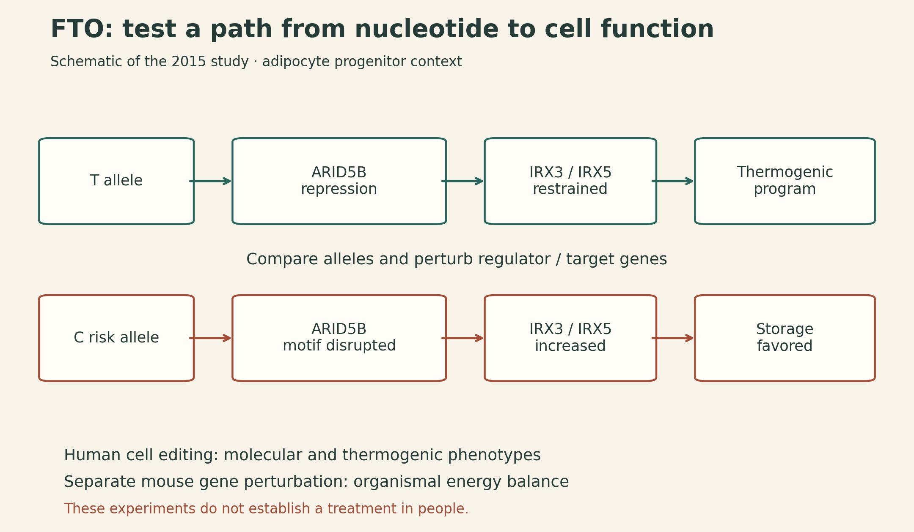
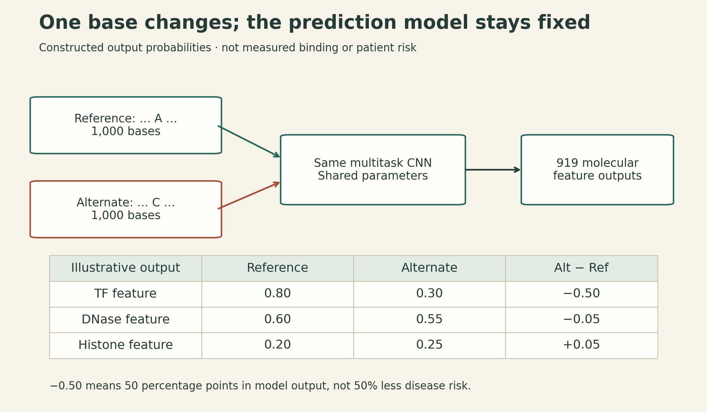

From a GWAS Signal to a Testable Mechanism
MIT 6.874 Lecture 12: Human Genetics, GWAS, and Disease Circuitry
A tall peak in a genome-wide association study identifies a statistical relationship between genetic variation and a trait. Turning that peak into a biological explanation takes several more steps: identify the relevant variant, the cell type in which it acts, the affected gene, and the consequences of changing it.
MIT 6.874’s Spring 2021 Lecture 12 connects those steps. Manolis Kellis develops the genetics and the FTO obesity-locus case study; guest lecturer Jian Zhou explains how sequence models predict molecular effects, including effects of variants too rare for a conventional single-variant association test. The useful connection is between two kinds of evidence: population studies locate associations, while molecular models and experiments help explain what those associations might mean.
1. Define the variant before interpreting its effect
A variant is a difference at a genomic location. Single-nucleotide variants change one base; insertions and deletions change sequence length; short tandem repeats vary in repeat count; structural variants rearrange or change larger segments. Different assays capture these classes with different reliability.
For a biallelic site, several descriptions answer different questions:
| Description | What it tells us |
|---|---|
| Reference or alternate | Whether an allele matches the chosen reference assembly |
| Major or minor | Its relative frequency in a specified population |
| Ancestral or derived | Its inferred evolutionary history |
| Risk-increasing or protective | Its association with a specified phenotype in a specified setting |
An alternate allele need not be rare or harmful. A minor allele can be protective. Frequency categories also depend on convention: the lecture uses approximately 5% and 0.5% as boundaries between common, low-frequency, and rare variation. Those are study labels, not biological discontinuities.
Discrete inheritance is compatible with continuous traits. In a simple additive model,
\[ Y_i=\mu+\sum_{j=1}^{m}\beta_j G_{ij}+\varepsilon_i, \]
\(G_{ij}\in\{0,1,2\}\) counts copies of a chosen allele for person \(i\) at locus \(j\). Many modest contributions, together with environmental and other residual variation, can produce a nearly continuous phenotype. This is a starting model; dominance, interactions, and environmental dependence can require richer terms.
Linkage analysis follows markers and a phenotype through pedigrees. It is especially useful when a strong effect produces an informative inheritance pattern. GWAS compares genotypes and phenotypes across many individuals, often detecting smaller effects that need large samples. These are overlapping regimes. Rare variants are not automatically high-impact, and common variants are not automatically harmless.
Rarity limits evidence even before choosing a model. In a constructed sample of 10,000 diploid individuals, an allele with frequency \(q=0.0001\) has an expected \(2Nq=2\) copies. A method cannot obtain a reliable population effect estimate from information that is barely present. Sequencing, family designs, and aggregation across biologically related variants address different parts of this problem.
2. An association test needs a null model and a denominator
The lecture gives the following allele counts for an IL23R example:
| Group | Allele A | Allele G | Total |
|---|---|---|---|
| Cases | 22 | 976 | 998 |
| Controls | 68 | 932 | 1000 |
| Total | 90 | 1908 | 1998 |
These are allele counts, not counts of people. Under independence between group and allele, an expected cell count is
\[ E_{ij}=\frac{R_i C_j}{n}. \]
For the case-group allele-A cell, this gives \(998\times90/1998\approx44.955\). The four expected counts are approximately \(44.955,953.045,45.045,954.955\). Pearson’s statistic is
\[ X^2=\sum_{i,j}\frac{(O_{ij}-E_{ij})^2}{E_{ij}} \approx24.524. \]
A \(2\times2\) table has \((2-1)(2-1)=1\) degree of freedom. The uncorrected Pearson test gives \(p\approx7.34\times10^{-7}\). Here, \(p\) is a null-model tail probability for a statistic at least this extreme. It is not the probability that the variant is harmless or that the null hypothesis is true.
The allelic odds ratio is
\[ \widehat{\mathrm{OR}}=\frac{22/976}{68/932}\approx0.309. \]
Allele A is less frequent in cases, consistent with a protective association. This odds ratio is not a direct estimate of an individual’s absolute disease risk. Case-control sampling deliberately changes the fraction of cases in the dataset.
This simple table is a teaching calculation. An allelic test needs appropriate assumptions about genotype sampling; real analyses generally work at the person level and account for ancestry, relatedness, genotype quality, and relevant covariates. A basic case-control regression writes
\[ p_i=P(Y_i=1\mid G_i,W_i), \qquad \log\frac{p_i}{1-p_i}=\alpha+\beta G_i+\gamma^\top W_i, \]
where \(i\) now indexes individuals and \(W_i\) contains their covariates. In a case-control sample, the intercept reflects the sampling design and does not directly give population baseline risk. Related samples may require a model that represents their dependence. A very small p-value cannot repair confounding or a systematic genotyping error.
Why the genome-wide threshold is much smaller than 0.05
With one million valid null tests, about 1,000 p-values below 0.001 are expected by chance. Bonferroni sets a family-wise threshold of
\[ \frac{0.05}{10^6}=5\times10^{-8}. \]
Its guarantee follows from a union bound and does not require independence. The familiar GWAS threshold reflects a conventional testing scale; the appropriate threshold still depends on the study. The IL23R table’s p-value is below 0.001 but above \(5\times10^{-8}\).
A Manhattan plot places genomic position on the horizontal axis and \(-\log_{10}(p)\) on the vertical axis. A Q–Q plot compares observed p-value quantiles with a null reference. Broad deviations can reflect confounding, technical problems, or genuine polygenic signal; the shape alone does not identify the cause. Combining studies can increase power, provided allele alignment, study quality, ancestry differences, sample overlap, and effect heterogeneity are handled appropriately.
4. The FTO example separates a genomic address from a mechanism
The 2015 study by Claussnitzer and colleagues investigated a region within FTO containing 89 common variants in high LD in Europeans. The regional association did not by itself establish which variant acted, which tissue mattered, or which gene mediated the effect.
The study assembled a chain of evidence:
- Cell context. Epigenomic annotations pointed to regulatory activity in adipocyte progenitors.
- Target genes. Long-range regulatory evidence and expression measurements implicated IRX3 and IRX5, rather than simply assigning the association to the gene containing the variants.
- Nucleotide and regulator. The rs1421085 T-to-C change disrupted an ARID5B repressor motif in the proposed circuit.
- Molecular consequence. Loss of repression increased IRX3 and IRX5 expression during early adipocyte differentiation.
- Cellular consequence. Perturbations supported a shift toward lipid storage and away from thermogenic programs. Repairing the C risk allele to T in primary preadipocytes from a risk-allele donor rescued relevant molecular and cellular phenotypes; the study also tested the reverse T-to-C edit in a nonrisk background.
- Organismal evidence. Separate mouse experiments tested adipose Irx3 perturbation and energy-balance phenotypes.

The value of the example is the sequence of interventions. A chromatin contact suggests a target; changing the nucleotide, the regulator, and the target genes tests more specific claims. Evidence from cultured human cells and from mice must retain those experimental contexts. It does not establish that editing this allele is a proven treatment in people, nor does this one circuit explain every effect at the FTO locus. Original study.
5. Epigenomic maps help choose the next experiment
ENCODE, Roadmap Epigenomics, and EpiMap connect genomic positions to molecular activity across cell types. Across many associated loci, enrichment in a tissue’s enhancers can nominate a relevant cellular context. Motif enrichment can suggest regulators; expression associations, chromatin contacts, and activity correlations can suggest target genes.
Each signal needs an appropriate comparison. Longer or more densely annotated LD regions can overlap more elements by chance. Correlated variants should not be counted as independent discoveries. Testing many tissues introduces another multiple-testing problem. The background should reflect the properties of the loci being tested.
An LD-expanded candidate list, such as variants above an \(r^2\) threshold, also differs from a Bayesian credible set. A credible set is defined from posterior probabilities under a statistical model. Calling every correlated variant “credible” would hide that distinction.
The lecture’s Alzheimer’s disease example illustrates why cellular resolution matters: an enrichment visible in microglial regulatory annotations can be obscured in a mixed whole-brain sample. Such enrichment supports a cell-context hypothesis; it does not imply that neuronal biology is irrelevant or that every associated variant acts through the same process.
6. Keep variant calling, molecular prediction, and disease interpretation separate
Machine learning enters at several stages, with different targets:
| Task | Example approaches discussed | Output being estimated |
|---|---|---|
| Variant calling | HaplotypeCaller, atlas2, DeepVariant | A genotype supported by sequencing reads |
| Functional prioritization | CADD and other annotation-based scores | A ranking based on learned or combined functional evidence |
| Sequence-to-function prediction | DeepBind, DeepSEA | A molecular feature associated with a sequence |
| Disease-mechanism analysis | Genetics plus functional evidence and perturbation | A tested explanation for a trait association |
HaplotypeCaller uses local assembly and read likelihoods; DeepVariant learns from read-derived representations. Their immediate question is which alleles are present. A highly confident genotype can still have an uncertain biological interpretation.
A functional score is useful for prioritization, but its training labels and calibration determine what it means. A high score is not automatically a probability that a particular person will develop a disease.
7. DeepSEA compares two sequences using the same learned model
Jian Zhou emphasizes three requirements for a regulatory-sequence model: enough sequence context, nonlinear interactions among sequence patterns, and shared features across prediction tasks. A multitask convolutional network provides all three. Lower layers can recognize local patterns, while later layers combine them over larger contexts.
The original DeepSEA framework predicts 919 chromatin features from a 1,000-base input: 690 transcription-factor binding features, 125 DNase features, and 104 histone-mark features. These are assay/cell-context outputs, not 919 different proteins. The tasks share a sequence model. Because the prediction concerns a particular location within the input, preserving relevant positional information also matters; global pooling can discard distinctions needed for location-specific predictions.
Write the model schematically as
\[ f_\theta:\{0,1\}^{1000\times4}\longrightarrow[0,1]^{919}. \]
The input is a one-hot DNA encoding. The chromatin predictor is trained on sequence and molecular-assay labels, without needing a labeled disease effect for every possible variant. For a substitution, prepare two otherwise identical sequences and calculate
\[ \Delta_k=f_\theta(x_{\mathrm{alt}})_k-f_\theta(x_{\mathrm{ref}})_k. \]
This signed difference is an intuitive summary of the predicted change in feature \(k\). It is not the complete original DeepSEA variant-prioritization score, which includes a separate downstream classifier using predicted differences.
Suppose, as a constructed example, a feature prediction changes from 0.80 to 0.30. Then \(\Delta=-0.50\): a decrease of 50 percentage points in the model’s output. This is not a measured binding change, a 50% reduction in disease risk, or a calibrated clinical probability.

This comparison can be repeated for all three alternative bases at each position: in silico mutagenesis. It maps the model’s sensitivity to substitutions. Predicting a novel sequence is possible even when its variant is rare; whether that prediction is accurate still requires evaluation.
Zhou discusses allele-specific DNase measurements as one evaluation: at heterozygous sites, compare which allele is more represented in an accessibility assay with the predicted direction. Mapping bias and imperfect measurements matter. Filtering to large predicted effects can improve directional accuracy while reducing coverage. Accuracy on selected high-confidence variants should be reported with that selection, and chromatin prediction accuracy is distinct from variant-effect accuracy.
8. Larger regulatory windows and rare variants change the evidence problem
Gene expression depends on more than one local binding event. The guest lecture describes an ExPecto-style approach: predict chromatin features across a roughly 40-kb region, summarize their spatial patterns with upstream and downstream exponential weighting functions, and fit a regularized expression model.
In schematic notation, if \(H_{jk}\) is predicted feature \(k\) at position \(j\), a spatial summary is
\[ Z_{k\ell}=\sum_j b_\ell(d_j)H_{jk}, \qquad \widehat y=\beta_0+\sum_{k,\ell}\beta_{k\ell}Z_{k\ell}. \]
Here \(d_j\) is distance from the transcription start site, and \(b_\ell\) is one of the chosen spatial basis functions. This explains how smooth distance-dependent contributions can be learned using fewer features than a separate coefficient for every position. It is a schematic of the lecture’s construction, not a claim that all regulatory influences fit within 40 kb. Predicting expression across genes also differs from predicting changes between individuals at the same gene. ExPecto paper.
The final application concerns de novo noncoding variants in autism families. A de novo variant is identified in a child but not detected in the parents’ sampled DNA; a sequence model can assign molecular-effect predictions even when that specific variant has almost no population recurrence.
The study compared predicted effects for variants in affected children and unaffected siblings. Rather than merely counting mutations, it analyzed their predicted transcriptional and post-transcriptional impacts, examined defined gene sets, and used network neighborhoods to aggregate evidence where single-gene power was limited. The reported patterns connected to synaptic and chromatin-regulatory functions. Study.
That is evidence at the level of distributions and biological groups. It does not establish that every high-scoring variant causes autism, identify the cause for an individual child, or turn a model score into a diagnosis. Mutation context, genomic annotation, family structure, assay biases, gene-set selection, and multiple testing remain part of a defensible comparison.
9. Follow the claim through the evidence
A useful reading habit is to ask what each result actually establishes:
- Genotype call: what sequence difference is supported by the reads?
- Association: how does that difference track the phenotype in the sampled population?
- Fine-mapping: which candidates remain plausible under the LD and causal model?
- Molecular prediction: which assayed molecular feature does the model predict will change?
- Perturbation: does changing the candidate alter the proposed mechanism in the relevant experimental system?
The strongest explanation connects these levels while preserving their boundaries. GWAS supplies a location to investigate. Sequence models make more candidates computationally tractable. Carefully chosen experiments test whether the proposed path from nucleotide to cellular function holds.
Lecture and sources
This article follows MIT 6.874, Spring 2021, Lecture 12. The course schedule lists GWAS and Rare Variants; the lecture develops human genetics, GWAS, and disease circuitry.
- Official course schedule and Lecture 12 slides.
- Official lecture video.
- Claussnitzer et al. (2015), FTO Obesity Variant Circuitry and Adipocyte Browning in Humans.
- Zhou and Troyanskaya (2015), Predicting effects of noncoding variants with deep learning–based sequence model.
- Zhou et al. (2018), Deep learning sequence-based ab initio prediction of variant effects on expression and disease risk.
- Zhou et al. (2019), Whole-genome deep-learning analysis identifies contribution of noncoding mutations to autism risk.